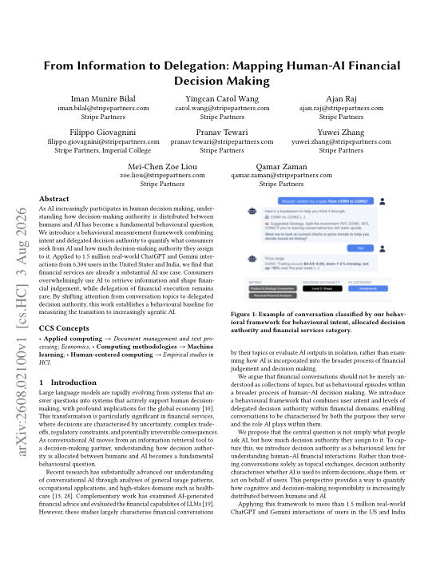
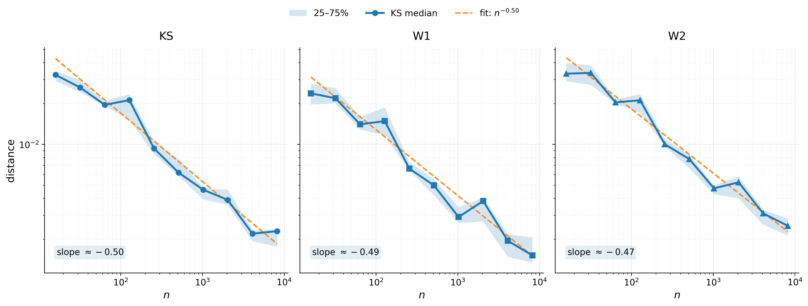
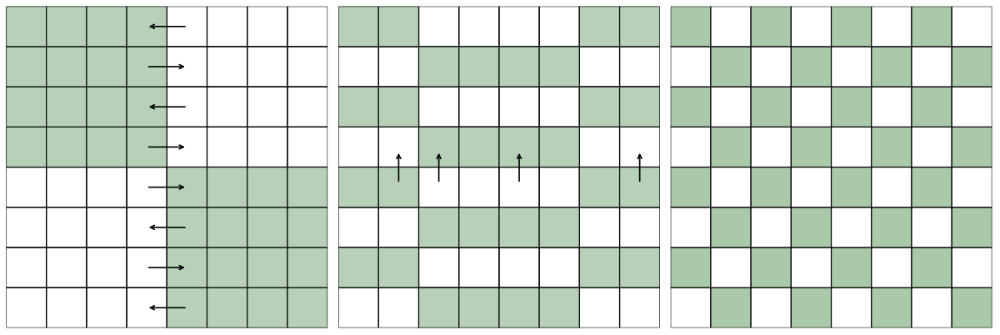
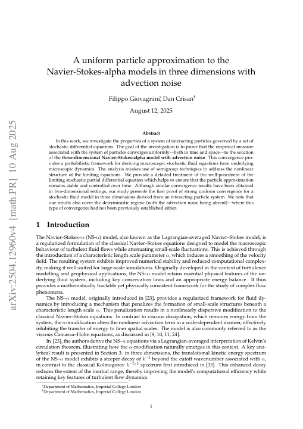
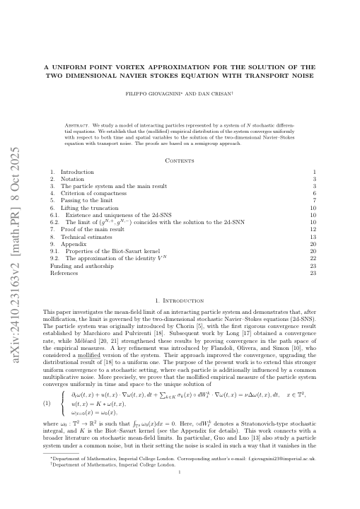

Kaggle Silver Medal - NeuroGolf 2026
Ranked 40th (top 1.4%) in an AI-agent and ONNX optimization challenge. Built an iterative agent workflow for exact verification, parameter reduction and memory-constrained model design.
CodeHello! I am a PhD candidate in Mathematics at Imperial College London, supervised by Professor Dan Crisan. My work spans deep-learning theory, high-dimensional probability and stochastic analysis.
I am interested in transformer and LLM architectures, agent systems, model evaluation and efficient inference. Recent work includes quantitative universality for deep neural networks, a decoder-only transformer built from scratch in PyTorch, and a Kaggle Silver Medal for agent-guided ONNX model optimization.
My doctoral research studies stochastic PDEs and interacting particle approximations of fluid models. Alongside the PhD, I work on applied machine learning and data science projects at Stripe Partners.
Ranked 40th (top 1.4%) in an AI-agent and ONNX optimization challenge. Built an iterative agent workflow for exact verification, parameter reduction and memory-constrained model design.
CodeImplemented causal multi-head attention, residual blocks, normalization and a language-model head in PyTorch; developing the TinyStories training and evaluation pipeline.
Ongoing

Iman Munire Bilal, Yingcan Carol Wang, Ajan Raj, Filippo Giovagnini, Pranav Tewari, Yuwei Zhang, Mei-Chen Zoe Liou, Qamar Zaman
Preprint, 2026
Paper
Filippo Giovagnini, Sotirios Kotitsas, Marco Romito
Preprint, 2026
Paper
Lucio Galeati, Filippo Giovagnini, Massimo Sorella
Preprint, 2026
Paper
Filippo Giovagnini, Dan Crisan
Preprint, 2025
Paper
Filippo Giovagnini, Dan Crisan
Preprint, 2024
PaperA review of Flandoli, Gubinelli and Priola (2010), prepared for an Imperial College London reading group.
NotePhD in Stochastic Analysis, supervised by Professor Dan Crisan
2023 - Present
Exchange programme in Mathematics
2023
Master's and Bachelor's degrees in Mathematics
2018 - 2023
2025/26
Current course notes and revision properties.
2024/25 archive
A notebook illustrating Brownian motion for students working through the course material.
Notebook